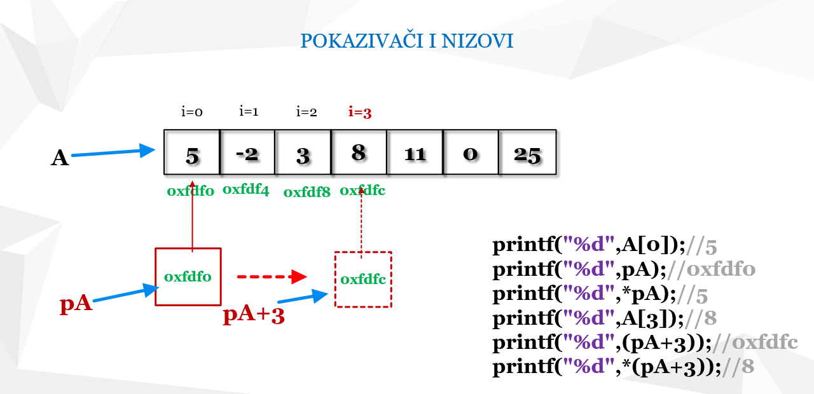

Pokazivači u C-u
Pokazivači (pointers) su promjenljive koje čuvaju adrese drugih promjenljivih. Omogućavaju direktan rad sa memorijom i dinamičko alociranje podataka.

Primjer: pokazivač koji pokazuje na promjenljivu
Osnovni primjer pokazivača:
#include <stdio.h>
int main() {
int broj = 10;
int *p = &broj; // p pokazuje na broj
printf("Vrednost: %d\n", *p); // dereferenciranje
return 0;
}
Kratko objašnjenje:
- *p - dereferencira pokazivač i daje vrednost na koju pokazuje
- &broj - vraća adresu promjenljive
- Pointer aritmetika: možete povećavati ili smanjivati pokazivače da pokazuju na različite elemente niza
- Dinamička memorija: malloc(), free(), realloc()
← Nazad na početnu